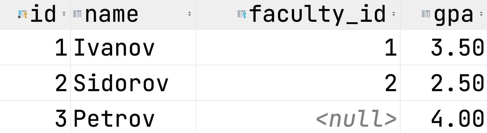

Классика CS
Много про реляционную модель
Немного outdated по SQL
Лекция 1 Введение в базы данных
Кто мы такие
Обзор курса
Почему стоит учить базы данных
Базы данных как область
О чем этот курс
Правила игры
Технологии курса
О чем поговорим сегодня
О чем поговорим сегодня
Обзор литературы
К. Дж. Дейт Введение в системы баз данных
A. Silbershatz, Henry F. Korth, S. Sudarshan Database System Concepts
Полноценный БД курс
Много дополнительных заданий
2020 edition

Б.А. Новиков, Е. А. Горшкова, Н.Г. Графеева Основы технологий баз данных
SQL Cookbook: Query Solutions and Techniques for All SQL Users
Edward Sciore Database Design and Implementation
Обзор курсов
Базы данных ВМК
CMU DB Database Systems
Данные
Данные

Информация о человеке
Форматы хранения данных
Человек vs машина
По структуре данных

Структурированные
Полуструктурированные

Неструктурированные
СУБД
Требования к СУБД
Вопрос в зал?
Историческая справка о СУБД
1960, Начало 1970-х
1970-ые Эдгар Кодд
Начало использования жестких дисков
Статья Эдгара Кодда.

Edgar F. Codd
Поздние 1970-ые и 1980-ые
System R(IBM Research), SQL/DS, A History and Evaluation of System R
Ingres (University California of Berkley) The Design and Implementation of INGRES
Oracle
Первые коммерческие СУБД: IBM DB2, Oracle, Ingres, DEC Rdb

1990-ые
Ранние 2000-ые
XML, JSON
Пространственные данные
Open-Source DB: PostgreSQL, MySQL
Графофые базы данных
Data Mining
Развитие Web-Commerce
NoSQL